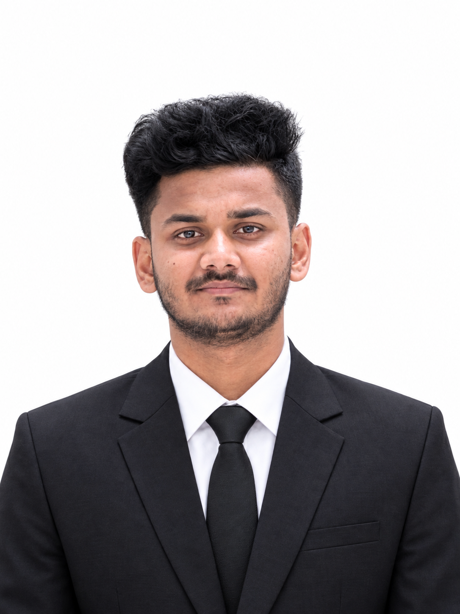

Content
Documentary Scriptwriting & Content Development
Worked with multiple YouTube channels, specializing in documentary scriptwriting and developing engaging explanatory content.
Aspiring Software Engineer & Technology Enthusiast with a passion for technology, communication, leadership, creative content, and building meaningful experiences.

A multidisciplinary profile combining technology, communication, creativity, and leadership.
I am an aspiring Software Engineer and Technology Enthusiast who enjoys learning, communicating ideas, working with people, and taking responsibility. Alongside my technology journey, I have developed experience in documentary scriptwriting, content development, public speaking, event management, and team leadership.
I believe strong technology is built not only with code, but also with curiosity, teamwork, communication, and a willingness to keep improving.
A balanced mix of technical ambition and people-focused skills.
Confident communication, presentation, hosting, and audience engagement.
Documentary scripts, explanation content, storytelling, and content development.
Planning, coordination, execution, and student engagement for university events.
Team handling, coordination, responsibility, and leading people toward shared goals.
Practical experience developed through content, university activities, events, and team environments.
Worked with multiple YouTube channels, specializing in documentary scriptwriting and developing engaging explanatory content.
Organized and managed university-level workshops, seminars, competitions, and student engagement programs, working across planning, coordination, communication, and execution.
Built hands-on leadership experience across university classes, student groups, events, and organizational activities by coordinating teams and taking responsibility for shared objectives.
Whether it's a technology project, creative collaboration, event, or professional opportunity — I'm always open to connecting.